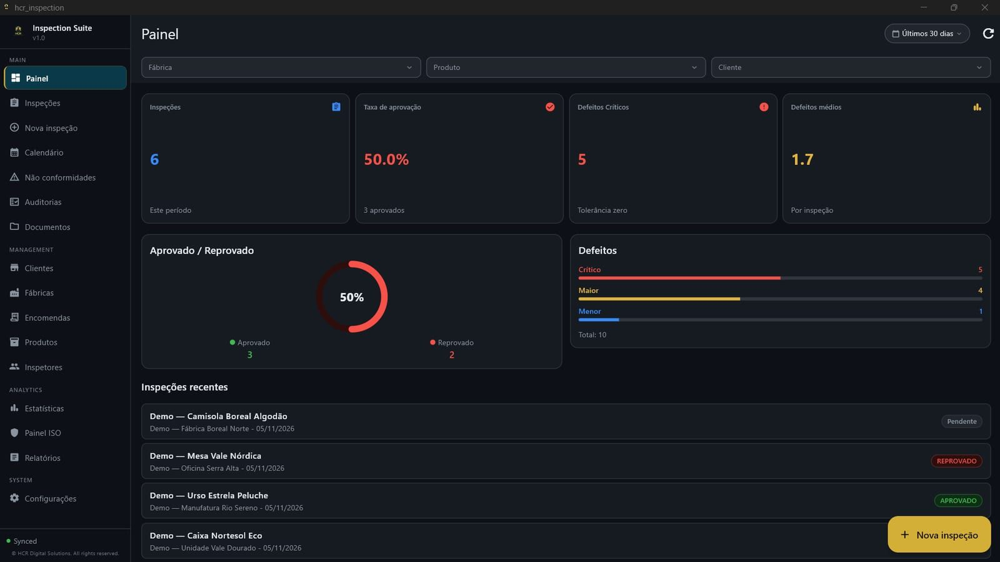

Inspeção com amostragem AQL
Define o lote e o nível de qualidade aceitável e conduz a inspeção com um assistente, do início à decisão.
Do plano de amostragem ao relatório final: a HCR Inspection Suite reúne inspeções AQL, defeitos, fotografias no relatório PDF, não conformidades e ações corretivas (CAPA) numa só plataforma: aplicação Windows que funciona offline e versão web (SaaS) no browser, incluindo no telemóvel.
O acesso é por convite durante o lançamento. Responde-se normalmente em 1 a 2 dias úteis.

Da inspeção AQL ao relatório PDF pronto a enviar: assistente AQL, defeitos, não conformidades com ações corretivas (CAPA), calendário e estatísticas.
O vídeo só é carregado do YouTube quando carregas em reproduzir. Ver no YouTube (legendas em EN, FR, ES e chinês).
Alguns ecrãs da HCR Inspection Suite, com dados de demonstração.
Define o lote e o nível de qualidade aceitável e conduz a inspeção com um assistente, do início à decisão.
Anexa fotografias à inspeção, por produto e secção, e vê-as no relatório PDF, sem juntar imagens à mão. No browser do telemóvel, tiras a foto na hora; na app Windows, escolhes-a da galeria ou dos ficheiros.
Gera relatórios PDF para o cliente ou para a fábrica, prontos a enviar, sem refazer o trabalho em Excel ou Word.
Abre não conformidades e acompanha as ações corretivas até ao fecho, no mesmo sítio da inspeção.
Planeia inspeções no calendário (com sincronização opcional com Google Calendar ou Outlook) e acompanha os resultados.
Trabalha na fábrica ou no armazém, mesmo sem rede. Os dados sincronizam quando a ligação volta.
As inspeções, não conformidades e ações corretivas (CAPA) que registas na aplicação ficam documentadas e rastreáveis, o que ajuda a manter evidências para auditorias internas e externas num sistema de gestão da qualidade ISO 9001. A HCR Inspection Suite não é um sistema de gestão certificado e não substitui a certificação da tua empresa: é a ferramenta que organiza o trabalho de inspeção.
Para responsáveis de qualidade, inspetores e equipas de controlo de qualidade que fazem inspeções no terreno e depois têm de fechar o relatório: fábricas, fornecedores, importadores e empresas de inspeção.
A HCR Inspection Suite é um produto da HCR Digital Solutions, uma startup portuguesa (micro-empresa) de software em Santa Maria da Feira. Foi criada por Hugo Resende, Quality Manager, a pensar em quem faz inspeções e depois tem de fechar o relatório. Somos pequenos, falamos diretamente com quem usa a aplicação e evoluímos o produto com o feedback dos primeiros utilizadores.
AQL (Acceptable Quality Limit, ou Limite de Qualidade Aceitável) é o critério de amostragem que permite decidir, a partir de uma amostra do lote, se esse lote é aceite ou rejeitado, sem inspecionar todas as peças.
Sim. A aplicação para Windows guarda uma cópia local dos dados necessários ao trabalho e sincroniza com o servidor quando há ligação. A versão web precisa de ligação à internet.
Em português, inglês e francês.
Escreve para HCRFinanceMaster@gmail.com. Durante o lançamento, o acesso é por convite.
As ligações usam HTTPS, as palavras-passe são guardadas apenas como hash e os dados de cada organização estão isolados ao nível da base de dados. Os detalhes, incluindo onde os dados são tratados, estão na política de privacidade.
Ainda não há preços públicos. Durante o lançamento o acesso é por convite: pede acesso e diz-nos quantos utilizadores e inspeções tens, e respondemos com condições.
Ainda não há integrações com ERP. A HCR Digital Solutions desenvolve também software à medida e integrações, por isso, se precisares, fala connosco.
A aplicação nativa é só para Windows. Existe também uma versão web (SaaS) que funciona no browser, incluindo no telemóvel, sem instalação. Não há aplicações nativas para Mac, Android ou iOS.
Ajuda a registar e rastrear inspeções, não conformidades e ações corretivas, que são registos típicos de um sistema ISO 9001. Não é uma certificação nem um sistema de gestão completo.